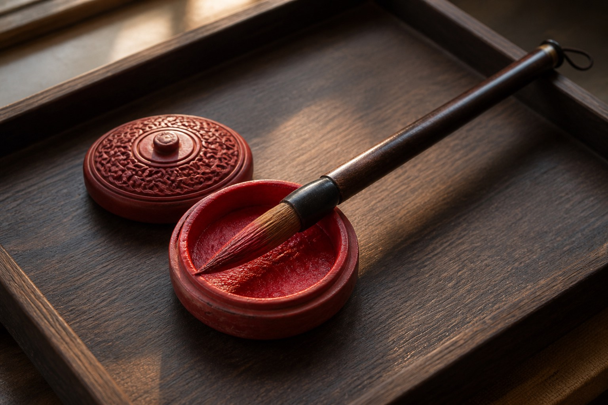

Completion is in cinnabar, not in the printer
dianzhu: a lisheng uses cinnabar on a wooden ancestral tablet. Until that rite is done, a paper funeral tablet is only paper. Print as red as you like; it is not a completed shenzhu. The house only issues paper. It does not perform dianzhu. The old extract and today’s window agree.
Cinnabar dish and brush, below. No writing on the picture. This page does not teach how the rite is done, does not write a mantra, and does not write who qualifies. Those lines would overstep.
If a temp’s scheme card ticks “perform dianzhu,” the window bounces. The reason is here: there is no cinnabar in the records room, and a dianzhu officer is not under a temp.
shengwei and longevity seats do not use this set. A living person’s seat is not dotted.extract
